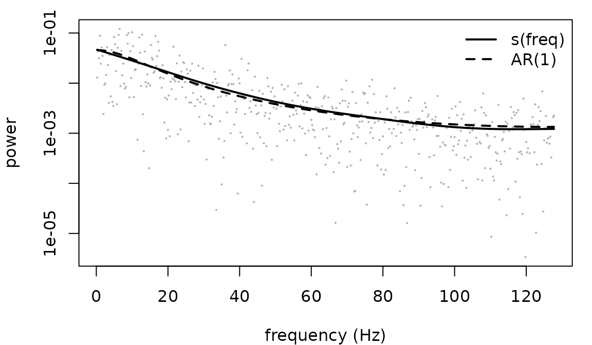

frmtmb has no spectral estimator and needs none. A periodogram
ordinate of a stationary Gaussian series is exponential about the
spectral density, and exponential() here is
mean-parameterized with a log link, so a spectral model is an
ordinary frm() fit whose response is the periodogram and
whose linear predictor is the log spectrum. That is the Whittle
likelihood, and everything the package already does - smooths, random
effects, nonlinear parameters, distributional terms - applies to it
unchanged.
This page fits four models with that one idea: a parametric spectrum, a nonparametric one, a hierarchical one, and a peak. It ends with where the likelihood is safe and where it is not, measured rather than asserted.
Read vignette("frmtmb") first for the grammar.
The data preparation is the part to get right
y <- as.numeric(arima.sim(list(ar = 0.7), 1024))
pg <- frm_periodogram(y, fs = 256)
head(pg, 3)
#> freq pgram
#> 1 0.25 0.01286719
#> 2 0.50 0.04331605
#> 3 0.75 0.03156247
nrow(pg)
#> [1] 5111024 points give 511 rows, not 512 and not 1024.
frm_periodogram() drops the zero frequency and the Nyquist
frequency, whose ordinates are chi-square with one
degree of freedom rather than two and so are not exponential. Keeping
them is wrong in a way that nothing downstream reports.
The scaling is that of stats::spec.pgram():
freq is in Hz and pgram is a density per Hz,
so the ordinates average to the variance divided by the sampling
rate.
taper is the other argument that changes an answer
rather than a convention. If the spectrum being fitted is steep - an
aperiodic exponent of 2 or more - read “A steep spectrum needs a taper”
below before trusting any number from an untapered periodogram.
A parametric spectrum
The AR(1) spectral density is s2 / |1 - phi e^{-i w}|^2.
On the log scale that is a nonlinear formula in two parameters, and the
log link means the formula IS the log spectrum:
pg$w <- 2 * pi * pg$freq / 256 # angular frequency
fit_ar <- frm(bf(pgram ~ ls - log(1 - 2 * tanh(z) * cos(w) + tanh(z)^2),
ls ~ 1, z ~ 1, nl = TRUE),
family = whittle(), data = pg)
c(phi = tanh(fixef(fit_ar)[["z"]][[1]]),
sigma2 = exp(fixef(fit_ar)[["ls"]][[1]]) * 256)
#> phi sigma2
#> 0.7078518 0.9981966The tanh is not decoration. A spectrum cannot tell
phi from 1 / phi: the two give the same shape
up to a constant, to the last bit, so the likelihood has two maxima and
an unconstrained optimizer reaches whichever it walks toward. Written as
ph ~ 1 and fitted to a strongly correlated series, this
model returns 1.129 as readily as 0.886, and 1.129 is 1 / 0.886.
Constrain the parameter and the ambiguity is gone.
Against exact Gaussian maximum likelihood on the series itself:
ref <- arima(y, order = c(1, 0, 0), method = "ML")
c(arima_phi = unname(ref$coef[["ar1"]]), arima_sigma2 = ref$sigma2)
#> arima_phi arima_sigma2
#> 0.7056956 0.9970957whittle() is the family that names this assumption. At
its default it is exponential(link = "log"); at
tapers = k it is Gamma with the shape held at
k, for a periodogram that averaged k of
them.
A nonparametric spectrum
Nothing about the response changed, so the spectrum can be a smooth instead, with the smoothing parameter estimated by the same Laplace marginal likelihood that estimates a random effect’s variance:

The smooth costs precision where the parametric model is right, which is the usual trade and is visible in the fit: use it when the shape is the question, not when a parameter is.
A hierarchical spectrum
This is the reason to do any of it. The aperiodic part of a neural
spectrum is a power law, S(f) = 10^b f^-chi, and on the log
scale that is linear in log f. So a
per-subject aperiodic exponent is a random slope, and the whole
two-stage pipeline - fit each spectrum, extract a number, test the
numbers - collapses into one fit.
fs <- 256
nf <- 511
f_hz <- seq_len(nf) * fs / (2 * nf + 1)
# a series with a given spectrum, built the way frm_series_draw() builds
# one: odd length, so no Nyquist ordinate has to be invented, and
# exactly zero mean
synth <- function(spec, fs) {
m <- 2 * length(spec) + 1
amp <- sqrt(m * fs * spec / 2)
z <- complex(real = rnorm(length(spec), 0, amp),
imaginary = rnorm(length(spec), 0, amp))
Re(fft(c(0 + 0i, z, Conj(rev(z))), inverse = TRUE)) / m
}
n_sub <- 12
chi_true <- 1.4 + rnorm(n_sub, 0, 0.3)
Y <- vapply(chi_true, function(ch) synth(10 * f_hz^(-ch), fs), numeric(1023))
colnames(Y) <- sprintf("s%02d", seq_len(n_sub))
pgs <- frm_periodogram(Y, fs = fs)
pgs$logf <- log(pgs$freq)
names(pgs)[names(pgs) == "series"] <- "id"
fit_h <- frm(bf(pgram ~ logf + (1 + logf | id)), family = whittle(),
data = pgs)
fixef(fit_h)
#> $mu
#> (Intercept) logf
#> 2.267599 -1.292537These series are built ON the Fourier grid, so their periodogram has no leakage and the exponent comes back clean. A recorded segment is not periodic, and for a steeper spectrum than this one that matters a great deal, which is the next section.
The population exponent is minus the logf coefficient,
and each subject’s own exponent is that plus their random slope,
shrunk:
chi_hat <- -(fixef(fit_h)[["mu"]][["logf"]] + ranef(fit_h)$id[, "logf"])
c(cor = cor(chi_hat, chi_true), max_error = max(abs(chi_hat - chi_true)))
#> cor max_error
#> 0.99740112 0.03292811A covariate on the exponent is now an ordinary interaction,
logf * age, and its standard error comes from the same fit
as the exponent rather than from a second-stage regression that treats
each subject’s estimate as if it had no uncertainty.
A steep spectrum needs a taper
The exponents above were near 1.4, and those series were built ON the Fourier grid, so nothing leaked. A recorded segment is not periodic, and an aperiodic exponent of 2 to 3 is ordinary in a neural spectrum. Cut a segment out of a long series with exponent 3 and ask for the exponent back:
nf_long <- 4088
f_long <- seq_len(nf_long) * fs / (2 * nf_long + 1)
steep <- synth(10 * f_long^(-3), fs)[1:1023] # exponent 3, then CUT
exponent <- function(taper) {
d <- frm_periodogram(steep, fs = fs, taper = taper)
d$logf <- log(d$freq)
-fixef(frm(bf(pgram ~ logf), family = whittle(), data = d))[["mu"]][[2]]
}
exponent("none")
#> Error:
#> ! whittle(tapers = 1): the response is far too smooth to be that. var(diff(log(y), lag = 3)) is 0.361, the refusal triggers below 1.64, and ordinates of shape 1 have an expected 3.29 whatever the spectrum is, since only the spectrum's own step-to-step variation adds to it. Two things look like this. (1) The ordinates were already averaged - Welch, Bartlett, multitaper - and this family says they are raw: pass tapers = the number of periodograms that were averaged. (2) They are spectral leakage rather than signal, which is what an untapered periodogram returns for a spectrum falling faster than f^-2, and the estimate from it would be the leakage floor rather than the spectrum: pass taper = "hann" to frm_periodogram(). If you already tapered, that is not the cause: the statistic compares ordinates 3 apart, which the tapers frm_periodogram() applies leave uncorrelatedwhittle() refuses, and the second half of its message is
the reason. An untapered transform has a leakage floor that falls like
f^-2. A spectrum steeper than that disappears underneath
it, so what reaches the model is the floor: not signal, and not
independent exponential ordinates either, which is the fingerprint the
family checks for.
A taper removes the floor, and the exponent comes back:
c(hann = exponent("hann"), truth = 3)
#> hann truth
#> 3.017831 3.000000Had the fit gone through, it would have returned about 2 whatever the true exponent, and whatever the length of the series. Over 300 replicates:
| exponent | n | raw | Hann | split cosine |
|---|---|---|---|---|
| 1 | 256 | 0.000 | -0.024 | -0.003 |
| 1 | 1024 | 0.005 | -0.002 | 0.002 |
| 2 | 256 | -0.084 | 0.017 | 0.061 |
| 2 | 1024 | -0.082 | 0.005 | 0.027 |
| 3 | 256 | -1.033 | 0.087 | 0.331 |
| 3 | 1024 | -1.094 | 0.029 | 0.148 |
Bias in the estimated exponent (dev/freq-findings.md). A
longer recording makes the untapered estimate worse, not better: -1.03
at n = 256 and -1.09 at n = 1024, against 0.087 and 0.029 for Hann.
Taper whenever the spectrum falls faster than about
f^-2 across the band being fitted.
What the refusal can and cannot see
Do not rely on the refusal to remind you, and know what its numbers are conditional on. Measured at 1023 ordinates over 6000 replicates, it fires on 96% of untapered replicates at exponent 3 and 77% at 2.5, but only 10% at exponent 2. At exponent 2 the untapered fit still comes back quietly 4% low, with small standard errors and well-behaved residuals, because the model is describing the leakage correctly.
Those are properties of the check at that many ordinates. Its statistic needs rows to compare, so it weakens as the response gets shorter, and its threshold shrinks with the row count to keep false refusals near zero:
| epoch at 256 Hz | ordinates | exponent-3 leakage caught |
|---|---|---|
| 1 s (n = 256) | 127 | 92% |
| 2 s (n = 512) | 255 | 95% |
| 4 s (n = 1024) | 511 | 96% |
| 8 s (n = 2048) | 1023 | 96% |
Each cell is 6000 replicates, so a rate here carries a standard error under 0.4 points.
Below 24 ordinates it does not run at all, and a
tapers = 2 response is separable from a raw one only above
about 200 ordinates. The refusal is a backstop for the extreme case, not
a test you can lean on.
If you work in one-second epochs, which is the
demanding case and what that first row is: taper by default when you are
after an aperiodic exponent. At n = 256 the untapered estimate is wrong
by -1.04 at exponent 3, and the check will still miss it about one time
in twelve. Averaging segments does not rescue this, it spends the very
ordinates the check needs - segments = 8 on a 256-point
epoch leaves 15. Stacking epochs does help, because rows are what the
check is short of: frm_periodogram() takes a matrix or a
group argument for exactly that, and a hierarchical fit
over stacked epochs is the shape this vignette recommends anyway.
The price of the taper is that neighbouring ordinates are no longer close to independent, so its standard errors are optimistic. That is far smaller than the bias it removes. It is not a reason to expect the refusal to fire on your tapered response: the statistic compares ordinates three apart, which a Hann window leaves uncorrelated, and a tapered raw periodogram was refused 0 times in 2000 replicates at each of nine cells.
Peaks need an averaged periodogram, and a starting value
A raw periodogram has a coefficient of variation of 1 at every
frequency: too noisy for the shape of a bump to be identified from one
realization. Averaging k non-overlapping segments divides
that by sqrt(k), and the average of k
exponential ordinates is Gamma with shape k, which is what
whittle(tapers = k) is:
# a longer record than the section above, because eight segments and a
# 45 Hz band still have to leave enough ordinates for the family to
# check the shape: see "what the refusal can and cannot see" above
set.seed(5)
f_pk <- seq_len(8192) * fs / (2 * 8192 + 1)
S_of <- function(f) 10 * f^(-1.4) + exp(-(f - 10)^2 / (2 * 1.5^2))
pk <- frm_periodogram(synth(S_of(f_pk), fs), fs = fs, segments = 8)
pk <- pk[pk$freq < 45, ]
pk$logf <- log(pk$freq)
nrow(pk)
#> [1] 359segments = 8 in the constructor and
tapers = 8 in the family are one decision written twice,
and they have to agree. They buy the resolution with the segment length,
so the grid is eight times coarser.
They have to agree, and here the family says so rather than the prose:
frm(bf(pgram ~ logf), family = whittle(), data = pk) # tapers forgotten
#> Error:
#> ! whittle(tapers = 1): the response is far too smooth to be that. var(diff(log(y), lag = 3)) is 0.308, the refusal triggers below 1.64, and ordinates of shape 1 have an expected 3.29 whatever the spectrum is, since only the spectrum's own step-to-step variation adds to it. Two things look like this. (1) The ordinates were already averaged - Welch, Bartlett, multitaper - and this family says they are raw: pass tapers = the number of periodograms that were averaged. (2) They are spectral leakage rather than signal, which is what an untapered periodogram returns for a spectrum falling faster than f^-2, and the estimate from it would be the leakage floor rather than the spectrum: pass taper = "hann" to frm_periodogram(). If you already tapered, that is not the cause: the statistic compares ordinates 3 apart, which the tapers frm_periodogram() applies leave uncorrelatedAn alpha peak sits on top of the aperiodic part, so the spectrum is a sum in power and the linear predictor is the log of that sum. Fit the aperiodic part alone first and start the full model from it:
ap <- frm(bf(pgram ~ logf), family = whittle(tapers = 8), data = pk)
st <- c(off_Intercept = fixef(ap)[["mu"]][[1]],
chi_Intercept = -fixef(ap)[["mu"]][[2]],
la_Intercept = 0, cf_Intercept = 10, lbw_Intercept = log(2))
peak <- function(cf0) {
st[["cf_Intercept"]] <- cf0
frm(bf(pgram ~ log(exp(off - chi * log(freq)) +
exp(la - (freq - cf)^2 / (2 * exp(lbw)^2))),
off ~ 1, chi ~ 1, la ~ 1, cf ~ 1, lbw ~ 1, nl = TRUE),
family = whittle(tapers = 8), data = pk, start = list(beta = st))
}
fit_pk <- peak(10)
round(c(centre = fixef(fit_pk)[["cf"]][[1]],
exponent = fixef(fit_pk)[["chi"]][[1]],
width = exp(fixef(fit_pk)[["lbw"]][[1]]),
height = exp(fixef(fit_pk)[["la"]][[1]])), 3)
#> centre exponent width height
#> 9.96 1.40 1.44 1.12Everything is recovered: the peak was at 10 Hz with width 1.5 and height 1, on an exponent of 1.4.
Now start the centre at 30 Hz instead. A Gaussian peak whose centre starts far from the data is flat: its gradient is zero to rounding everywhere the data lives, so the optimizer has nothing to follow.
fit_bad <- peak(30)
c(centre = round(fixef(fit_bad)[["cf"]][[1]], 2),
se = suppressWarnings(sqrt(diag(vcov(fit_bad)))[["cf_(Intercept)"]]),
logLik = round(as.numeric(logLik(fit_bad)), 1),
good_logLik = round(as.numeric(logLik(fit_pk)), 1))
#> centre se logLik good_logLik
#> 27.4 NaN 216.1 412.3The centre wandered off into a band with no peak in it, the standard
error came back undefined - the curvature at that point is not a maximum
- and the log-likelihood is far below the good fit’s. This is the single
thing most likely to go wrong on this page, and it is a starting-value
failure, not a model failure. par_template() prints the
names to start.
Where the Whittle likelihood is safe
Whittle treats the ordinates as independent, which is exact only in the limit, so the estimator is biased in short series.
What follows compares two estimators of the SAME parameter on the
SAME simulated series: the Whittle profile likelihood over phi with the
innovation variance concentrated out, computed on
frm_periodogram() output, against
arima(order = c(1, 0, 0), method = "ML"), which is exact
Gaussian maximum likelihood on the series itself and estimates a mean as
Whittle implicitly does. Lengths 64 to 4096, phi 0 to 0.95, 400
replicates per cell to n = 1024, 200 at 2048, 100 at 4096. The table is
bias in phi; the grid, the code and the Monte Carlo standard errors are
in dev/freq-findings.md, and the numbers are not recomputed
here:
| n | phi = 0 | 0.3 | 0.5 | 0.7 | 0.9 | 0.95 |
|---|---|---|---|---|---|---|
| 64 | -0.006 | -0.016 | -0.027 | -0.031 | -0.041 | -0.044 |
| 128 | 0.004 | -0.010 | -0.014 | -0.018 | -0.020 | -0.023 |
| 256 | -0.006 | 0.000 | -0.004 | -0.010 | -0.012 | -0.013 |
| 512 | -0.002 | 0.001 | -0.001 | -0.006 | -0.006 | -0.007 |
| 1024 | -0.003 | -0.001 | -0.001 | -0.003 | -0.002 | -0.002 |
| 2048 | 0.000 | -0.004 | 0.000 | -0.001 | -0.001 | -0.002 |
| 4096 | 0.000 | -0.002 | -0.003 | 0.000 | 0.000 | 0.000 |
Read it as three statements.
- The bias is downward and it is a small-sample effect, not a Whittle effect. Exact ML on the same series is biased downward too, and more so in 40 of these 42 cells: -0.061 against -0.044 at n = 64 and phi = 0.9. (The two exceptions are at phi = 0.95, for the reason in the third point.) Most of what the table shows is the ordinary small-sample bias of an autoregressive estimate, which both methods pay. Read that as “Whittle costs nothing here”, not as “Whittle beats exact ML in general”: this is one model, one reference implementation, and a mean estimated on both sides.
- One or two seconds of EEG is the demanding case. At 256 Hz that is 256 to 512 points, where a bias of one to three percent of a parameter near 0.9 is worth stating in a paper. By 4096 points there is nothing left to correct.
-
At phi = 0.95 it is the REFERENCE that fails, not Whittle
that wins. The exact ML of
arima()drifts up toward the unit-root boundary there: median 0.978 at n = 1024 and 0.990 at n = 4096, against a Whittle median of 0.949 and 0.950 on the same series. The positive numbers in the last column of the exact-ML block, and the whole root-mean-square advantage Whittle appears to have in that column, are the reference optimizer near the boundary. That column is not evidence about the two likelihoods.
Tapering does not always pay
A taper changes the bias but not the family: dividing by
sum(h^2) keeps E I(f) at the spectral density,
so the mean model is untouched and only the independence between rows is
weakened further.
For an AR(1) it costs rather than pays. Hann tapering made the bias WORSE at every cell of the grid above (-0.062 against -0.044 at n = 64, phi = 0.9), because that spectrum is not steep enough for leakage to be the problem and the taper throws away the ends of the series.
So the rule is about the SHAPE of the spectrum, not the length of the
series: taper when it falls faster than about f^-2 across
the band, which is the aperiodic case shown earlier, and not
otherwise.
The debiased variant, and what it would cost
Replacing the spectral density with the EXPECTED periodogram - the model’s autocovariance, triangle-weighted and transformed - removes about a third of the remaining bias (-0.037 against -0.044 at n = 64, phi = 0.95; -0.031 against -0.041 at phi = 0.9). It is not expressible in this grammar. The mean at one frequency is a sum over lags of a parameter-dependent autocovariance, so it is not a function of that row’s predictors, and writing it would need a term whose value at each row is a linear functional of a vector computed once per likelihood evaluation. That is the same seam a complex cross-spectrum needs, and it belongs with that work rather than here.
What the post-processing is about
Everything after the fit speaks about the periodogram, because that is what was fitted.
head(fitted(fit_s), 3) # the fitted spectral density, per Hz
#> 1 2 3
#> 0.04639334 0.04581062 0.04523522
head(residuals(fit_s), 3) # ordinate minus that density
#> 1 2 3
#> -0.033526146 -0.002494575 -0.013672748simulate() is refused by name on a
whittle() fit, and so are the four entry points built on
it: pp_check(), frm_simulate(),
frm_bootstrap() and
conditional_effects(method = "predict"). A draw from this
model is a vector of spectral ordinates, and handed back under the
response’s name it reads as a simulated time series, which it is not:
the phases are not in a periodogram. Draw ordinates in the open instead
-
- and when a series really is what is wanted, ask for one:
z <- frm_series_draw(fit_s, nsim = 1, seed = 1)
c(length = length(z), fs = frequency(z))
#> length fs
#> 1023.00 255.75frm_series_draw() gives each Fourier frequency an
independent complex Gaussian amplitude with the fitted variance and
transforms back. It is a draw from the fitted model, not an inverse of
any particular periodogram: two calls give two unrelated series.
What this does not do
- Phase-amplitude coupling is a higher-order property. It lives in the bispectrum, which is not a periodogram and has no exponential marginal, so no formula written here reaches it.
- A non-stationary epoch breaks the assumption before the likelihood is reached. Time-frequency analysis needs segmentation, and each segment is then a spectrum of its own; a single fit over a non-stationary epoch estimates an average that may describe no moment of it.
- Two signals need the cross-spectrum, which is complex, and the multivariate periodogram at each frequency is complex Wishart rather than exponential. Coherence, phase and directed measures are a different family, not a different formula, and they are out of scope for core.